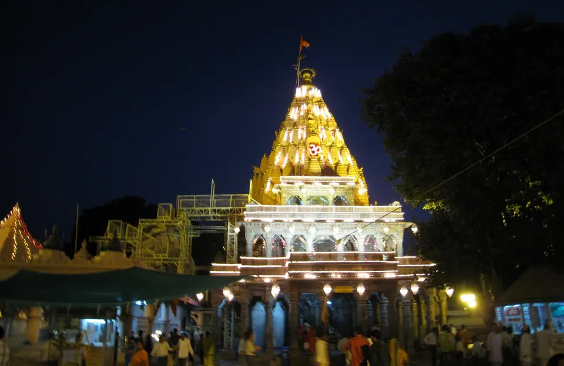
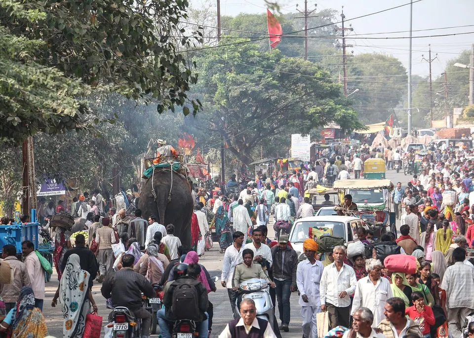
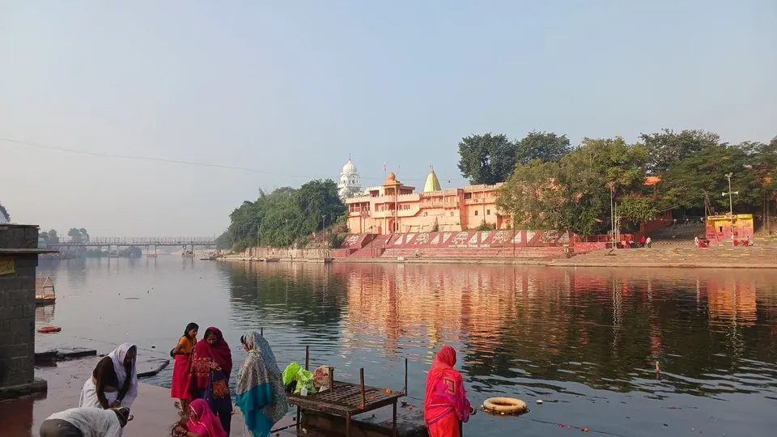

New Year Darshan at Mahakaleshwar: Crowds and Planning

New Year at Mahakaleshwar is one of the busiest times of the year in Ujjain. In past years the temple has seen queues from 4 AM on 31 December, over eight lakh visitors on 1 January 2024, closed paid-darshan counters and barricaded entry routes. If you can choose, avoid those two days; if you cannot, go early, keep the day free and be ready to queue.
Many families ask us whether it is auspicious, or even sensible, to begin the year with Baba Mahakal's darshan. It is a lovely thought, and thousands do it each year. We have simply learnt that the families who enjoy it most are the ones who plan for the crowd and not against it. Here is what past years looked like, and how we would plan it.
What past New Years looked like at the temple
We do not yet know the official arrangements for 31 December 2026 and 1 January 2027, and nobody writing today can. What we can share is the pattern from earlier years, as reported by Free Press Journal and others. Treat it as a guide to the mood, not a forecast.
1 January 2024: the heavy year
Free Press Journal reported that over eight lakh people took darshan on the first day of 2024. A new tunnel inside the premises helped, and waits were around 40 minutes (one devotee said 50). Barricading stopped entry for a time because of the crowd, and vehicle movement in the whole area was banned.

31 December 2024: the quiet year
The next year was very different. Free Press Journal reported that footfall on New Year's Eve 2024 was down about 25 per cent, with the premises looking nearly empty. The paper put it down to devotees heading to the Kumbh Mela in Prayagraj and to Ayodhya. The Shighra Darshan and Rs 250 counters were kept closed for three hours that morning in anticipation of a crowd that did not come.
31 December 2025: long queues again
On the last day of 2025, Free Press Journal described a massive crowd at Bhasma Aarti, long queues from 4 AM, a temple decorated with flowers and lights, and heavy security. The report also said politicians and film personalities were expected in the first week of January. It gave no headcount. Another report, from India.com, said about five lakh rudraksha and 11,000 damrus had been added to the decorations across the temple and Mahakal Lok.
The lesson is simple. Crowds swing with the calendar, the news and even the weather. So we plan for the heavier version.
How entry and queues have worked
Arrangements are announced by the temple and the administration close to the date, and they change. The details below are from past years, so please check the official temple site for the current plan.
- General entry through the Triveni Museum side. In 2024, general devotees were directed from the Char Dham temple parking area towards the Triveni Museum, and sent out near Bada Ganesh Temple (Free Press Journal, 24 December 2024).
- Extra routes if the crowd grows. The same report mentioned routes via Ganesh Mandapam or the new tunnel, and a direct line to Kartikeya Mandapam with exit by Gate No. 10 or Nirmalya Gate in case of overcrowding.
- Signs and help points. Flex boards pointed to shoe stands, parking, prasadam counters, first aid and drinking water, and CCTV covered the route.
- Vehicle restrictions. In 2024, vehicle movement around the temple was banned. Expect to walk the last stretch.

Bhasma Aarti and paid darshan at New Year
This is where families are most often disappointed, so we say it plainly. In December 2024, Free Press Journal reported that online and offline Bhasma Aarti registrations were suspended over the New Year period, "as per the annual tradition", and that live Bhasma Aarti was shown at Kartikeya Mandapam from 4:15 AM. Fast-track and paid counters were also closed for part of the morning on 31 December 2024.
We cannot tell you what the rule will be this year. If Bhasma Aarti is the heart of your trip, read our guides on how to book Bhasma Aarti and what the experience is like, and consider a date away from 31 December and 1 January.
Timings to keep in mind
Ujjain Darshan, a commercial guide, lists the temple opening at 4 AM, the main gates closing at 10 PM ahead of the 10:30 PM Shayan aarti, and general entry reopening at 4 AM. It also says morning aarti timings shift by about 30 minutes on major festival days. Our own daily schedule guide has more. Please confirm on the day.
Watch before you go: the corridor and the temple
A short video makes the walking distance and the surroundings easier to picture, especially for elders. These are independent travellers' videos, not ours and not the temple's, so fares, queues and rules are as they were on the day they filmed. They are not New Year videos; the official live darshan page lets you see the temple as it is now.
- ▶ Walk through the Mahakal Lok corridor YouTube · Travel With Bhavesh. The 900-metre corridor, its two grand gateways and the murals along the way.
- ▶ Mahakal darshan and Mahakal Lok tour YouTube · Traveling Baba. A full visit, including the best time to go and how Bhasma Aarti booking works.
- ▶ Official live darshan Shri Mahakaleshwar Temple website. Watch the aarti live from home, and find the official Bhasma Aarti booking.
A calm plan for 31 December and 1 January
Choose your day
If your dates are flexible, we suggest the days after the New Year rush. A weekday in January, away from Shravan, Mahashivratri and other festivals, is easier on everyone. Our winter guide to Ujjain explains what the season is like.
If you must go on the day
- Arrive a day early. With vehicles banned near the temple in 2024, being settled nearby the evening before saves hours.
- Go early. Queues were already long from 4 AM at the end of 2025. Decide beforehand whether the family will stand in that line.
- Keep the whole morning free. Waits of 40 to 50 minutes were reported in 2024. Do not book a train or an onward taxi for the same afternoon.
- Carry little. Leave phones, bags and valuables at your stay; Ujjain Darshan notes that phones and cameras are not allowed inside. Wear footwear that slips off easily.
- Agree on a meeting point in case someone is separated, and share a WhatsApp location.
With elders and young children
We usually advise a gentler pattern: rest after travel, darshan at the quietest hour you can manage, then return to your stay. See our guide on visiting Ujjain with elderly parents. Many families also like an easy evening on the Shipra, and the open walk through Mahakal Lok, but not on the same crowded day as the main darshan.

For getting to Ujjain and moving around, see our travel page. Book your stay first, then plan darshan around it.
Where to stay near Mahakaleshwar for New Year
All five of our villas are within 2 km of Mahakaleshwar Jyotirlinga, about 6 minutes by car or 12 minutes on foot, and in-house guests get a complimentary Mahakal shuttle (up to 5 guests per trip). New Year dates are in demand, so please message us early.
Rudrangan Suites


Our newest villa, opened in 2026, has designer finishes and garden seating. It has 3 bedrooms, sleeps 6, and starts from ₹5,200 per night. It is air-conditioned, has geysers for hot water, a lift, and is wheelchair friendly, which helps on a cold early morning with elders. The kitchen has an induction cooktop, so tea and a warm breakfast are easy before a 4 AM start. Check-in is from 10:30 AM and check-out is at 9:30 AM, with a later check-out possible on request.
For larger families, Divinestay (3 bedrooms, sleeps 8, from ₹5,500) and Villa Aranya (3 bedrooms, sleeps 8, from ₹5,800) suit three generations; AP Suite (2 bedrooms, sleeps 4, from ₹4,200) suits a couple. See them all on our villas page. Our caretaker explains the Bhasma Aarti booking process on your arrival evening, and the shuttle drops guests at the temple gate by 3:30 AM for the 4 AM aarti; the temple permit itself is booked by you.
Frequently asked questions
Is Mahakaleshwar very crowded on 31 December and 1 January?
Usually yes, but it varies by year. Free Press Journal reported over eight lakh people taking darshan on 1 January 2024, while on 31 December 2024 the temple looked nearly empty and footfall was down about 25 per cent. Plan for a heavy crowd, hope for a lighter one, and check local news in the last week of December.
Can I book Bhasma Aarti for New Year?
Do not count on it. In December 2024, Free Press Journal reported that online and offline Bhasma Aarti registrations were closed over the New Year period, described as an annual tradition. Live Bhasma Aarti was shown at Kartikeya Mandapam. Rules can differ each year, so check the temple's official site before building your trip around it.
Will paid or fast-track darshan be available at New Year?
Not reliably. In past years the Shighra Darshan and Rs 250 counters were closed for part of the morning when a big crowd was expected, as Free Press Journal reported for 31 December 2024. Assume you may stand in the general queue, and treat any fast-track option as a bonus rather than a plan.
How long is the darshan queue at New Year?
Reports differ. Free Press Journal said visitors waited about 40 minutes on 1 January 2024 with the new tunnel, and one devotee said 50 minutes. On the last day of 2025 queues were already long from 4 AM for Bhasma Aarti. Waits depend on the day and hour, so keep your whole morning free and carry water.
Is it better to visit Mahakal before or after New Year's Day?
If dates are flexible, the days after the New Year rush are usually calmer than 31 December and 1 January, though we cannot promise it, and Free Press Journal reported VIP visits expected in the first week of January 2026. A weekday in mid-January, away from any festival, is the gentlest choice for elders and young children.
Sources
- Free Press Journal: over 8 lakh devotees on the first day of 2024
- Free Press Journal: Bhasma Aarti registrations suspended at New Year (24 December 2024)
- Free Press Journal: sharp decline in footfall on New Year's Eve 2024
- Free Press Journal: heavy crowd on the last day of 2025
- India.com: New Year 2026 temple preparations
- Ujjain Darshan: Mahakaleshwar temple timings and rules
- Shri Mahakaleshwar Temple: official live darshan
Timings, prices and dates change, especially on festival days. Please verify before you travel with the official temple or government site.
If you are thinking of starting the year with darshan, tell us your dates and how many are travelling, and we will help you plan a calm stay. You can also reach us on our contact page.
— Apoorv, Founder, AP Villas & Resorts